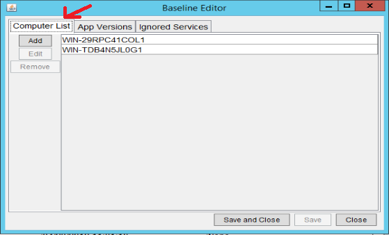
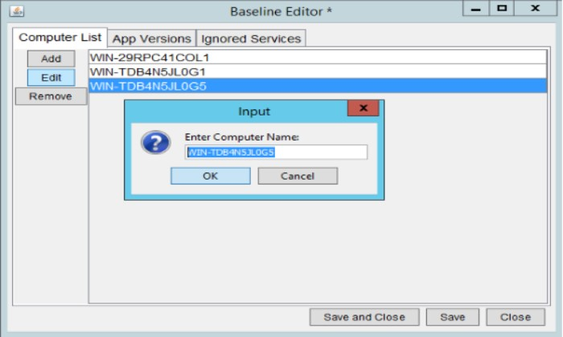

User Guide
Installation
- Copy the Project6 folder to the directory you would like to have the tool installed.
- Build Java Admin Tool in Eclipse
- Open Eclipse workspace located at Project6/EclipseProjects
- Right click on AdminTool, Click Export, Select Runnable Jar under Java, Click Next
- Select MainWindow - AdminTool for the launch configuration
- Select the Projec6 folder on your machine for the export destination
- Click Finish
- Disregard any warnings
Running the Tool
- Make sure that the tool has been properly installed by using the installation guide
- Make sure that the .jar file is in the Project6 folder
- Create a shortcut to the .jar file by right-clicking and selecting Create Shortcut. This shortcut can be placed anywhere that is needed.
- Edit the properties of the shortcut by right-clicking the shortcut and selecting Properties
- Under the Shortcut tab, change the Target field to match the following format:
"Path to Java JRE executable" -jar "Path to .jar file"
Ex. "C:\Program Files\Java\jdk1.8.0_201\bin\java.exe" -jar AdminTool.jar
- Under the Shortcut tab, choose Advanced... and check the "Run as Administrator" box
- Use the newly created shortcut to run the tool
Report Interpretation
- From the administrator UI:
- Click the 'File' widget at the top-left
- Click 'Generate Report'
- You will be prompted to add a comment to the report. Enter anything you want attached to that report (can be edited later)
- Once the report has been generated, right-click on the desired report's row
- Select 'Full View' or 'Short View' to open the report in your computer's default web browser
- Manually allow the page to load on your web browser if prompted to do so
- NOTE: You may not have to do this depending on your web browser's security settings (modify those settings to always allow this web page to load on your web browser)
Header Information
At the top of each report you'll find information on when the report was generated, as well as a drop-down table to select which type of report you wish to view. Comments are also mentioned here if any where provided during the generation of the report.
*Each section has a Why the Red Highlighting? line above the table. If you move your cursor over the line, it will tell you why there might be errors among entries in the section in question. There is also a Toggle widget that, when clicked, will collapse or expand the table it correlates to.
Applications
The first section of the report provides a table regarding the installed applications on the given system(s). Each application on your system(s) is displayed by Name, Version, and Status of the application in question. The name is simply the name that appears on the application's entry in the computer's uninstall list. The Version is the application's current version number. And the Status refers to the application's consistency with the provided baseline file. Statuses consist of "OK" (no problems), "Out-Of-Date" (application on your system is behind the baseline file), "Ahead" (application on your system is ahead of the baseline file), and "DNE" (Does Not Exist: application found on your system does not exist on the provided baseline file). If no baseline was provided, this column will be empty (filled with " - ").
Drive Space
The Drive Space section displays the used/available space on each drive on each computer. This information is displayed in both Gigabytes used/available and percent free.
IP Addresses
The IP Addresses section simply displays the IP Address of the computer in question (either remote or local).
OS Version
The OS Version displays the Operating System version number of the computer in question.
Memory Usage
The Memory Usage section references how much RAM (Random Access Memory) is being utilized. The tool gathers information on how much memory is free (both in terms of Gigabytes and percent free) and the total memory.
Server Time
The Server Time section refers to what time the server was on during the generation of the report, as well as the date and the time zone the server was in. Time information is reported in both standard time and Unix time.
Server Services
The final section refers to the current running services on the machine(s) during the generation of the report. The name of each computer scanned is in the first column (as per usual). The name of each process found on that computer is displayed in the second column. The state of the process is displayed in the third column (referring to whether the program was running or stopped). After that, we see the start mode of that process which could either be Auto-start or Manual. If the start mode of the process is Auto-start and the process is currently not running, then it will be flagged as an error. To eliminate any false-positives, you can edit the Services baseline file to ignore any processes that are flagged frequently that aren't causing any problems. Whether or not the process is in the baseline file is displayed in the last column (Ignored).
Delete Reports / Edit Comments
- Make sure to correctly install the tool by referencing the Installation Guide.
- Make sure the .jar file has been installed to the Project6 folder.
- Double click the shortcut created in Running the Tool and the admin tool will begin to run, displaying the GUI on screen. From here you will be able to see a list of previous reports.
- You can right-click on any report and 3 options will pop up, one being to edit the comment on that specific report.
- After clicking edit comment and input box will pop up and now you can edit that comment or if one was not entered you can enter one.
- On the top left of the GUI there is a "File" button. Click on this and select "Generate Report"
- An input box will pop up prompting you to enter a comment for this newly generated report.
- You may leave this blank or enter something and edit it later.
- To delete a report all you must do is make sure the selected report is highlighted and click the designated delete key on your keyboard.
Edit Baseline Files
- The baseline files are used by the admin tool to filter out any potential problematic areas that do not meet the requirements specified in the baseline file. Currently, it takes in three arguments
- Computer List: specifies which computers the program will be executed on in the network.
- App Versions: will specify the minimum application version should be installed in the system.
- Ignore Services: the services that are specified in this list will be ignored by the tool during execution time.
- To access the baseline editor in the Admin Tool:
- Open Admin Tool -> File -> Edit Baseline Files
- We will add a computer name to the Computer List as an example

- Click add button and a window prompting a new computer name will appear.
- Insert a computer name and it will be added to the list.

- To remove or to edit a computer name follow the same steps except select the desired option instead.